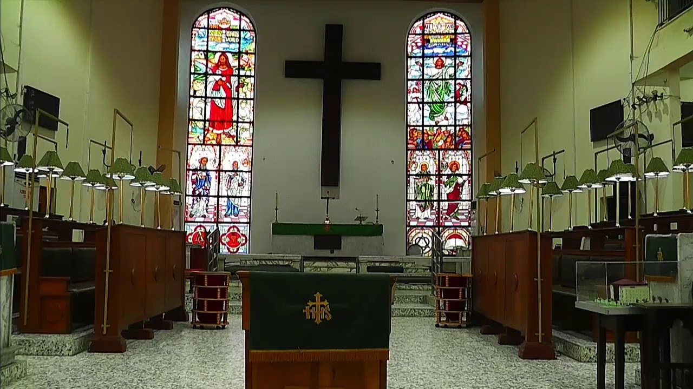
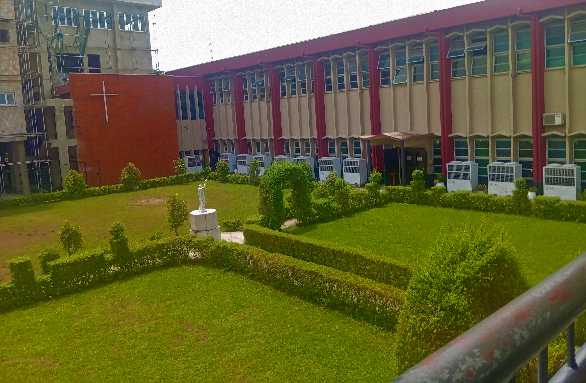
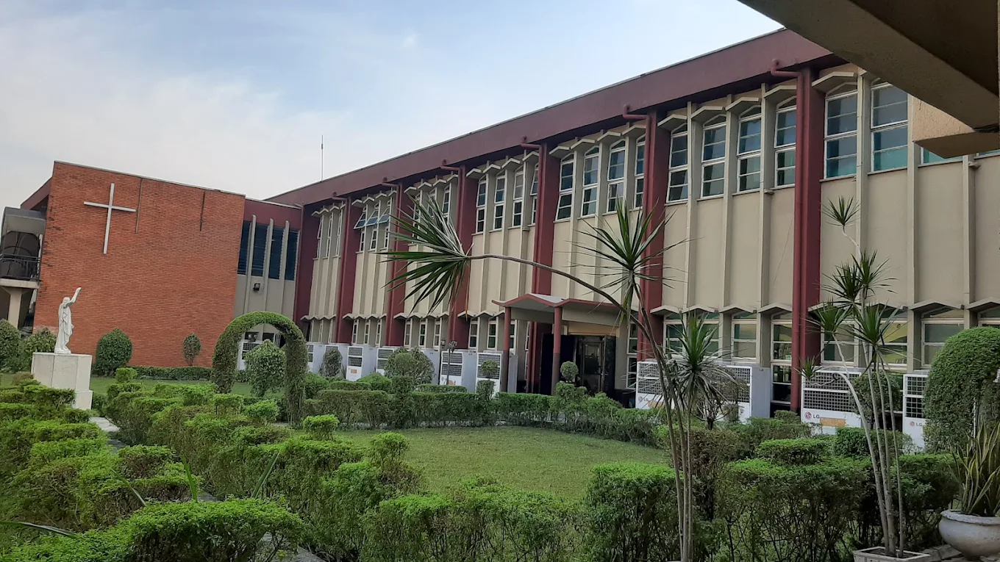
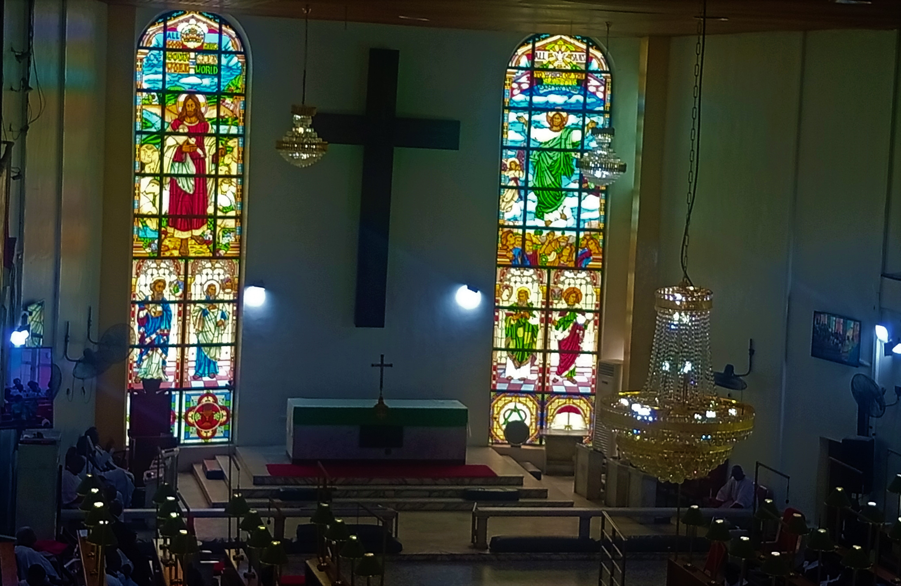

Our History
Tracing the roots of All Saints' Anglican Church, Yaba, from the arrival of Christianity on the West African coast to the founding of Yaba itself.




Tracing the roots of All Saints' Anglican Church, Yaba, from the arrival of Christianity on the West African coast to the founding of Yaba itself.
THE Church of God worldwide has grown and developed in various cultural and socio-political environments which have inevitably exerted multifarious influences on her progress. The Anglican Communion in Nigeria, to which All Saints’ Church, Yaba, belongs, is no exception to this general rule. It is pertinent, therefore, to give a cursory account of the political and social circumstances in which the Church came into being and grew.
Christianity was first introduced to the West African Coast in the 15th and 16th Centuries by the Catholic Portuguese in areas such as “the Sene-Gambian region, Sierra Leone, Benin and Warri” but their efforts collapsed with the onset of the inhuman triangular slave trade. Protestant Missions led the revival drive to christianise West Africans in the late 18th century with the activities of the British Missionary societies. A new foundation for evangelical work was laid with the establishment of a station by the Church Missionary Society (C.M.S.) in Sierra Leone in 1806.
By 1842, the C.M.S. had established a station at Abeokuta and followed with another in Lagos in 1851. By 1853, the Society had reached Ibadan. It continued its drive, helped along, no doubt, by the Yoruba Civil Wars of that period and the hope by the warring states to strengthen themselves “through alliance with Europeans who brought the guns” they needed to continue the wars. This state of affairs, among others, allowed other aspects of European activities to intrude forcibly upon the social, political, and economic history of not only Yoruba land but the entire area covered by present-day Nigeria and even beyond.
On Christmas eve, 1851, Commodore Bruce, the Commander of the British Naval Squadron in West Africa, led the British Navy against King Kosoko of Lagos. This was on the advice of John Beecroft, who had been appointed British Consul of the Bights of Benin and Biafra two years earlier. The king was defeated. Anti-slave trade treaty with Akintoye, Kosoko’s successor, was signed on January 1, 1852. Almost a decade after the bombardment, Oba Dosumu was forced to cede Lagos to the British in another treaty in 1861.
By 1914, under Frederick Lugard, the union of the conquered Northern and Southern Protectorates of the present Nigeria had taken place and a formal colonial administration over these Protectorates was established. Lagos was the headquarters from where the amalgamated Northern and Southern Protectorates were governed. Consequently, a large number of people converged on Lagos Island, which soon became badly congested, with practically no attention being paid to the requirements of a healthy environment. Frequent outbreaks of diseases and epidemics resulted from this situation.
Large numbers of the indigenous population died needlessly year by year. The European population lived in Reservation Areas which were unaffected by these outbreaks. Indeed, there was a lot of discrimination against indigenous people. It was not until 1924, when a Nigerian, Dr. Isaac Ladipo Oluwole, was appointed Assistant Medical Officer of Health that the health problems and hazards of the people began to enjoy proper understanding and attention. One of the measures introduced by Dr. Oluwole was the establishment of a new settlement which became known as the “Yaba Estate” or “Yaba Garden City”, as the residents later fondly called it.
← Back to Home